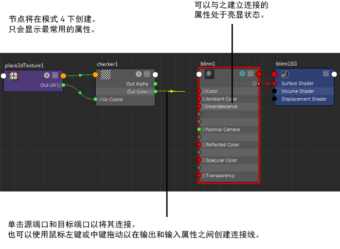

默认情况下，在 Hypershade 中首次创建节点时，将显示其最常用的属性（节点编辑器中的热键 4 模式）。
有关节点视图模式的详细信息，请参见节点编辑器视图模式。
通过单击工作区工具栏中的  以显示节点的搜索字段，可以搜索节点中的特定属性（或者过滤出属性）。
以显示节点的搜索字段，可以搜索节点中的特定属性（或者过滤出属性）。
使用连接线连接属性
- 单击源端口，然后单击目标端口以将其连接。
或者，可以使用鼠标左键或鼠标中键进行拖动，在输出属性和输入属性之间创建连接线。若要释放连接线，请在图表的任意空白区域上单击鼠标左键，或按 Esc 键。
将鼠标悬停在可用的输入上方时，所有可以接收连接的输入都将亮显。这表示可以与该输入建立连接。
所有无法接收连接的输入都将灰显。这表示连接不可用。
如果将鼠标悬停在复合属性上，Hypershade 将自动展开以显示可以连接的子项。
此外，还将捕捉到可以连接的端口。这样，能够轻松标识可以连接到的属性。
提示：
连接复合属性（例如，颜色为父属性，而颜色 R、G、B 为子属性）时，如果在子属性（例如，颜色 R）已连接的情况下尝试连接到父属性（颜色），则将断开到子属性的连接。
可以拖动连接线以断开并重新创建连接。
也可以在其收拢视图模式下连接节点，就像在节点编辑器（简单视图模式，热键 1）中那样。详细信息请参见连接属性而不展开节点。